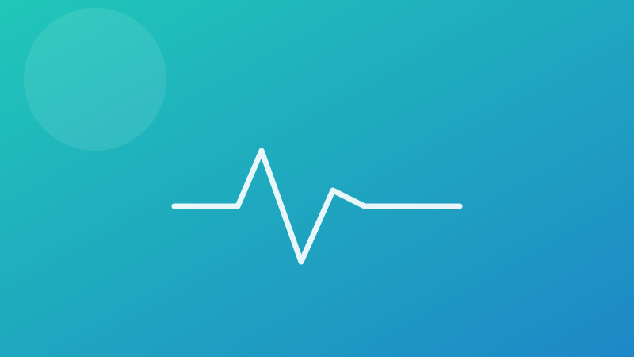
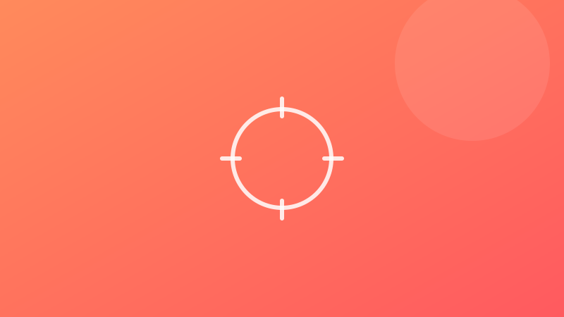
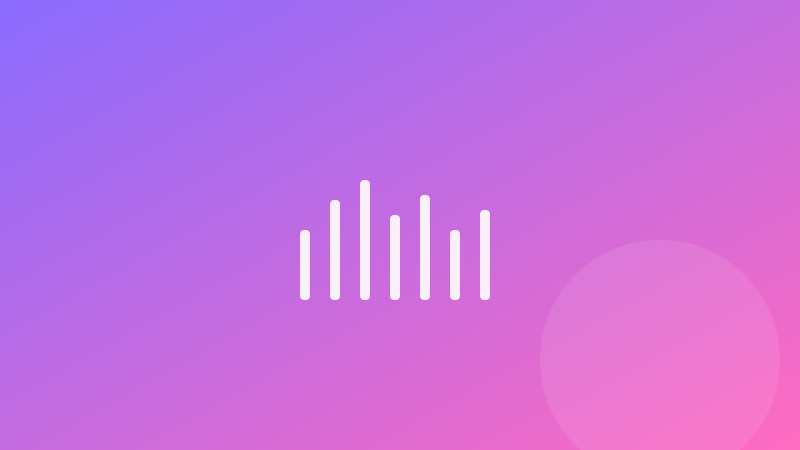
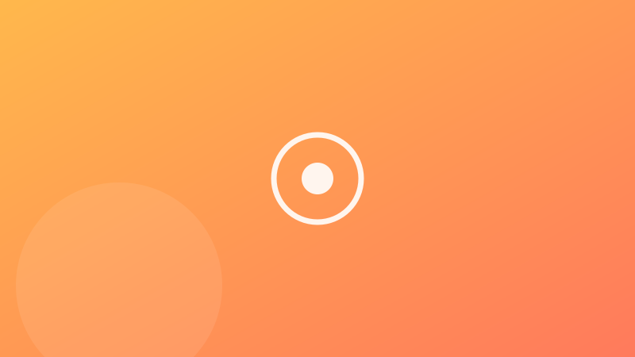

Ultimele știri din oraș
Evenimente locale, sportive și culturale — tot ce mișcă în oraș, într-un singur loc.
Articole recente

Sport
Cupa Orașului la Fotbal începe weekendul acesta
16 echipe locale se luptă pentru trofeu pe stadionul central. Program complet și reguli de acces.

Eveniment
Festival de Vară în Centrul Vechi
Trei zile de muzică, standuri locale și activități pentru toată familia, chiar în inima orașului.

Cultură
Concert în aer liber în Parcul Central
Trupe locale urcă pe scenă vineri seara. Intrarea este liberă, iar spațiul verde e amenajat special.

Sport
Turneu de baschet 3x3 pentru amatori
Înscrieri deschise pentru echipe de amatori. Premii pentru primele trei clasate.
Eveniment
Târg de vară în piața centrală
Producători locali, artizanat și gustări tradiționale, în fiecare sâmbătă din luna august.
Sport
Cros popular pe malul lacului
Trasee de 3 și 5 km, deschise tuturor vârstelor. Startul se dă duminică dimineața.